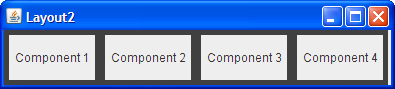
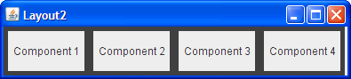
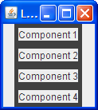
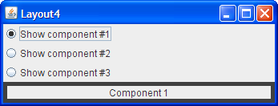
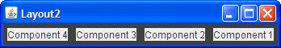

Preguntas y Ejercicios: Disponer Componentes Dentro de un Contenedor
Preguntas
En cada una de las siguientes preguntas, elija el gestor de diseño(s) que se ajuste más naturalmente al diseño
descrito. Asuma que el contenedor que controla el gestor de diseño es un JPanel.
1. El contenedor tiene un componente que debe tomar tanto espacio como sea posible

|

|
a. BorderLayout
b. GridLayout
c. GridBagLayout
d. a y b
e. b y c
2. El contenedor tiene una fila de componentes que serán visualizados con el mismo tamaño, rellenando completamente el área del contenedor.
 

a. FlowLayout
b. GridLayout
c. BoxLayout
d. a y b
3. El contenedor muestra un número de componentes en una columna, donde el espacio extra va entre los dos
primeros componentes.
|  |

|
a. FlowLayout
b. BoxLayout
c. GridLayout
d. BorderLayout
4. El contenedor puede visualizar tres componentes completamente diferentes en tiempos distintos, dependiendo quizás de la entrada del usuario o el estado del programa. Incluso si los tamaños de los componentes difieren, el cambiar de un componente al siguiente no debería cambiar la cantidad de espacio reservada al componente.


a. SpringLayout
b. BoxLayout
c. CardLayout
d. GridBagLayout
Ejercicios
1. Implemente el diseño descrito y mostrado en la pregunta 1.
2. Implemente el diseño descrito y mostrado en la pregunta 2.
3. Implemente el diseño descrito y mostrado en la pregunta 3.
4. Implemente el diseño descrito y mostrado en la pregunta 4.
5. Agregando una única línea de código, haga que el programa que escribió para el Ejercicio 2 muestre los componentes de derecha-a-izquierda, en vez de izquierda-a-derecha.
